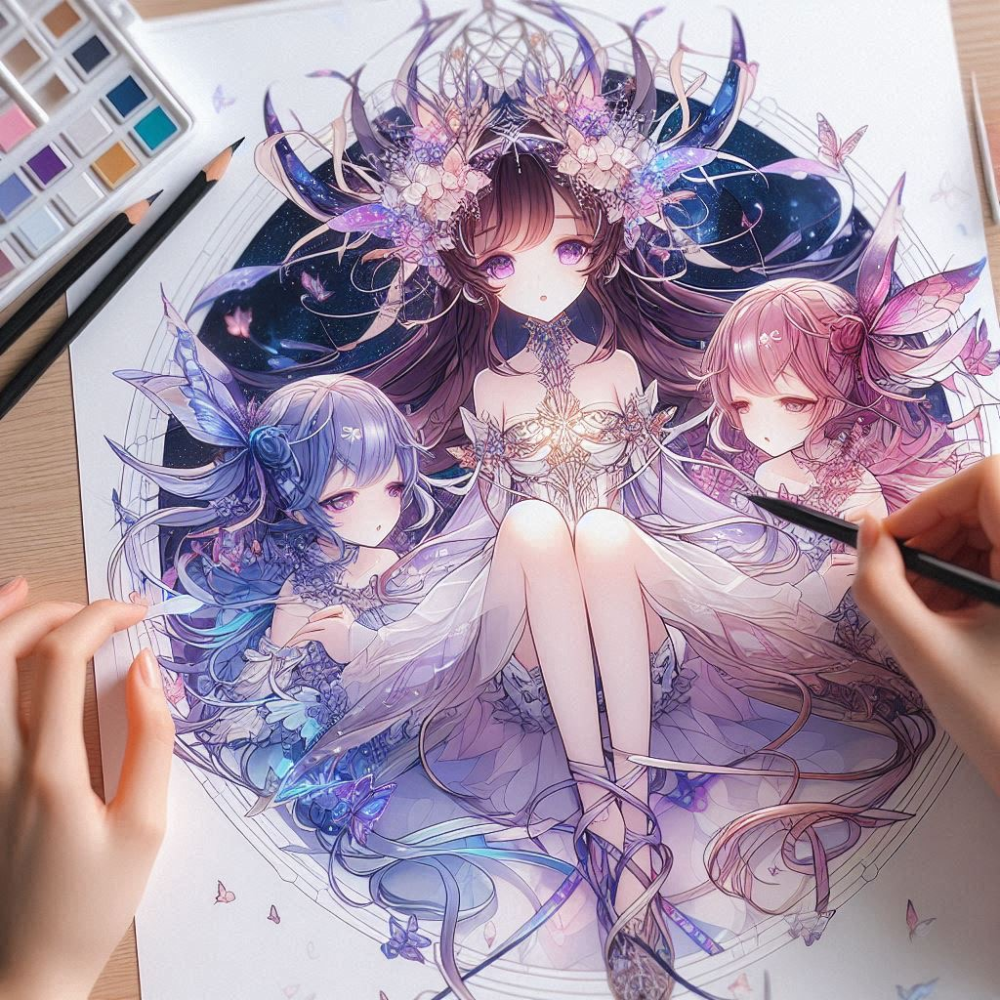

未来のメタバースアイドル、MetaMuseの公式サイトへようこそ！
MetaMuseはメタバースに存在する架空のアイドルグループです。未来の音楽とパフォーマンスをお届けします。

役割: リーダー
誕生日: 8月15日
血液型: A型
身長: 165 cm
趣味: 星を見ること、読書
特技: ダンス、ピアノ
役割: 音楽担当
誕生日: 11月30日
血液型: AB型
身長: 162 cm
趣味: 作曲、写真撮影
特技: ギター、ハーモニーを作ること
役割: 元気担当
誕生日: 3月21日
血液型: B型
身長: 158 cm
趣味: スポーツ、アニメ鑑賞
特技: チアリーディング、ボーカル
最新のニュースやリリース情報をここに表示します。
MetaMuseが新たにリリースするシングル「終電間際」は、静かな夜の駅を舞台にしたエモーショナルな楽曲です。この曲では、終電間際のホームでの出会いと、心に刻まれる特別な瞬間が描かれています。 夜風に包まれたプラットフォームで交わされる約束と、未来への希望が込められた歌詞が特徴です。 「終電間際」は、リスナーに心の奥深くに響くメロディと共に、忘れられない夜の思い出を届けます。MetaMuseのメンバーが奏でる音楽が、夜の静けさと共鳴し、聴く者の心を温かく包みます。
2024年7月7日、メタバースアイドルグループMetaMuseが、ファーストシングル「星の旅路」をリリースしました。 このアルバムは、彼女たちの独自の世界観を音楽で表現し、リスナーを幻想的な旅へと誘います。 「星の旅路」には、MetaMuseの魅力が詰まっています。 リーダーのルナ・スターリング、元気担当のオーロラ・スカイ、音楽担当のセレステ・ハーモニーの個性が光る楽曲が揃い、未来感溢れるサウンドと共に、心に響く歌詞が特徴です。
MetaMuseが2024年7月7日に誕生しました。この新たなメタバースアイドルグループは、リーダーのルナ・スターリングを中心に、オーロラ・スカイとセレステ・ハーモニーが加わりました。彼女たちは独自の音楽性と共に、デジタル空間での新たな旅を始めます。 MetaMuseはそれぞれが持つ異なる個性と才能を結集し、未来への音楽的探求を目指します。グループのファーストシングル「星の旅路」は、夏の新たなサウンドトラックとして期待され、全世界のリスナーに届けられる予定です。 MetaMuseの公式ウェブサイトやSNSを通じて、彼女たちの最新情報やアルバムリリースに関する詳細をお楽しみください。
MetaMuseの楽曲を公式サイトで無料で配信中！